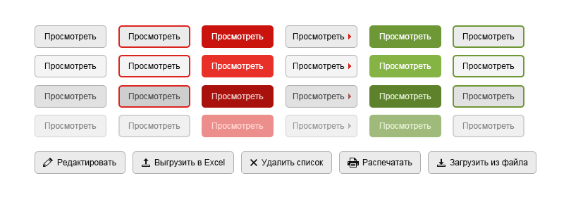
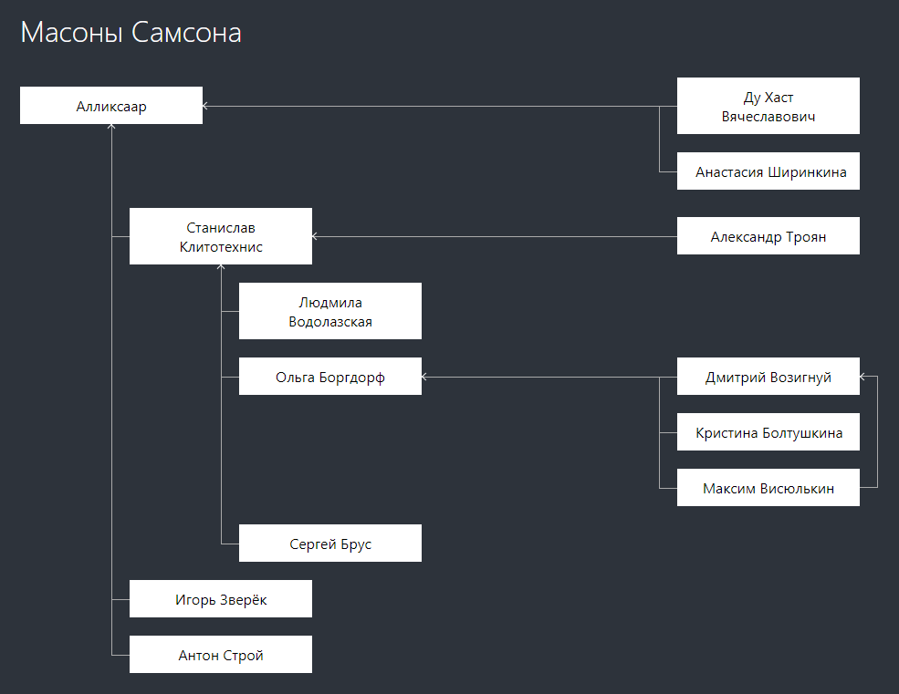
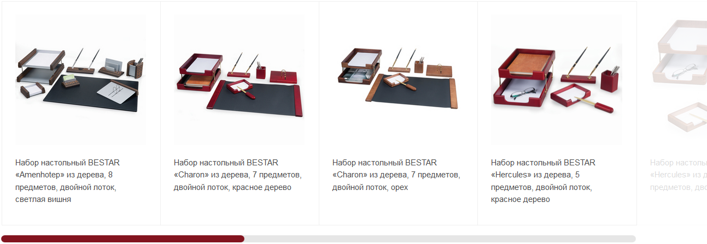
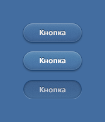
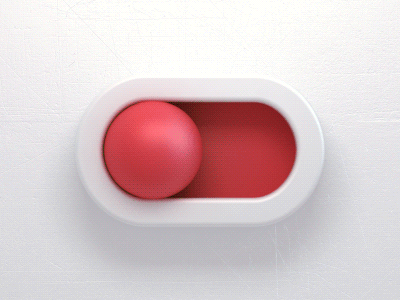

psd можно бесплатным инструментом Photopea.
Или фотошопом, если есть.
Сверстайте произвольный текст.
Чем будет больше использоваться разнообразных элементов, тем лучше.
Решение


Несколько вариантов кнопок в разных состояниях. Нужно сверстать их так, чтобы можно было легко добавить новое состояние или вид кнопки. buttons.psd
Решение
Нужно сверстать витрину.
Она должна прокручиваться полосой снизу.

Решение
С этой страницей творятся странные дела.
1) Она отчего-то долго грузится.
2) Иногда она грузится дольше, чем просто долго.
3) Как-то она странно выглядит.
4) Текст на этой странице немного не соответствует правилам нашего языка.
5) Тот, кто сделал эту страницу, бесследно исчез.
Нужно разгадать загадку чёрной страницы и победить все её проблемы.
Чёрная страница
Кнопка

Наш дизайнер проснулся от криосна и нарисовал кнопку такой, как было принято в его время. Сверстайте её максимально приближенно к макетам и анимируйте переходы между показанными состояниями. button.psd Решение Чекбокс
Потом он увлёкся и сделал вот такой чекбокс. Но от него не осталось даже исходников. Удачи!